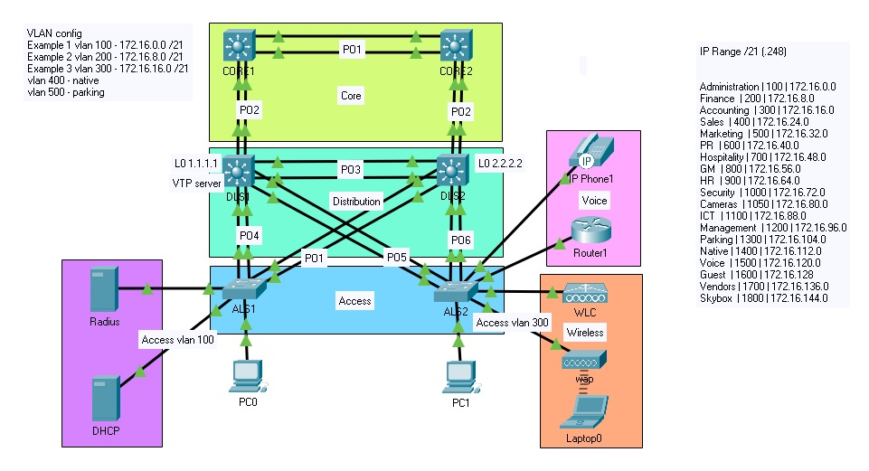
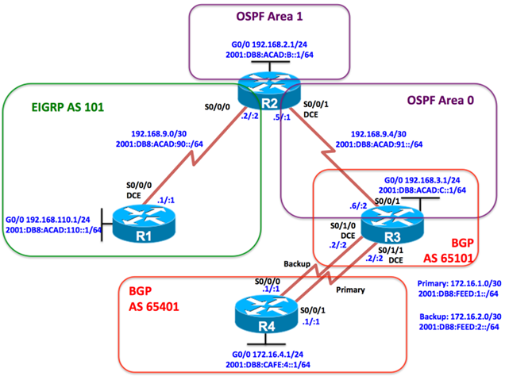
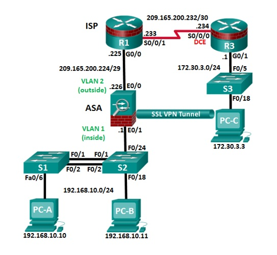
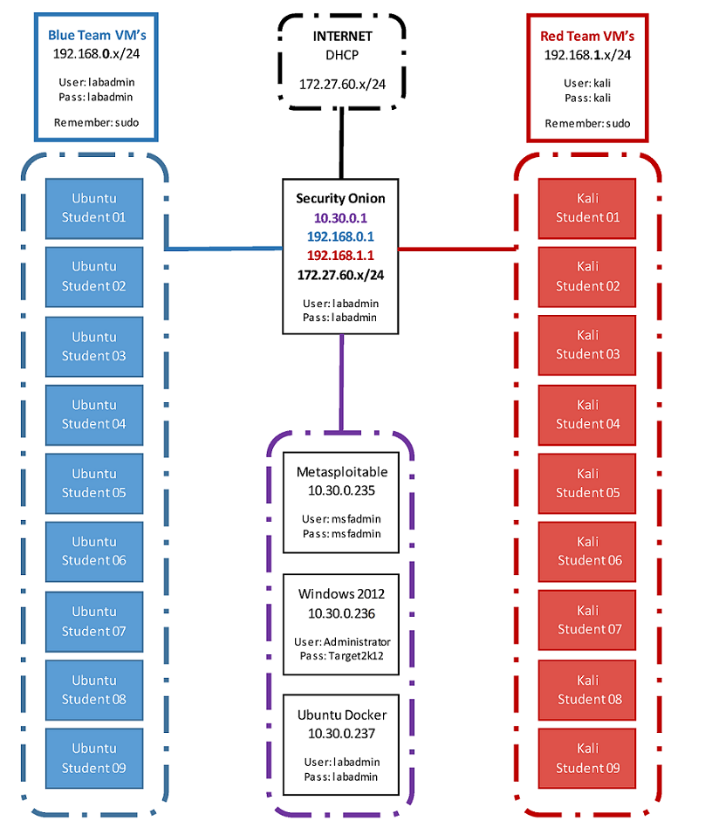

Here are some of my projects. Please Click on the images to read more.
×

Security configuration: Radius authentication across network devices, mac address security, bpdu guards, DHCP tracking & ip source guard
Wireless technology: WLC controlling WAP. WLC also acts as a dhcp server for WAP for connecting guest devices, operating on vlan 300
Voip: Telephony service within a dhcp pool assigned to voice. Includes QOS configuration & DSCP mapping for heavy applications such as video streaming.
Redundancy & Availability: Spanning tree priority on distribution layer switch 1 to assist with load balancing, Spanning tree portfast to reduce redundant network traffic HSRP configured for high availability in case of a router failure. Link aggregation for high bandwidth. Dedicated NATIVE & PARKING vlan
">
Wireless technology: WLC controlling WAP. WLC also acts as a dhcp server for WAP for connecting guest devices, operating on vlan 300
Voip: Telephony service within a dhcp pool assigned to voice. Includes QOS configuration & DSCP mapping for heavy applications such as video streaming.
Redundancy & Availability: Spanning tree priority on distribution layer switch 1 to assist with load balancing, Spanning tree portfast to reduce redundant network traffic HSRP configured for high availability in case of a router failure. Link aggregation for high bandwidth. Dedicated NATIVE & PARKING vlan
">
OSPFv3 Configuration: Configured R2 & R3 into OSPFv3 address families, Assigned passive interfaces & router-id, stubbed area 1
Named EIGRP: Configured R1 & R2 in AS 101 & configured redistribution between OSPF & EIGRP & used an ACL to block advertising .3 route between R2 & R1.
Security: Enabled routing protocol authentication to secure EIGRP IPv4 & IPv6 using SHA256.
BGP: remote-as configuration and neighbor association included to route between BGP. Assigned backup & primary interfaces for high availability">
Named EIGRP: Configured R1 & R2 in AS 101 & configured redistribution between OSPF & EIGRP & used an ACL to block advertising .3 route between R2 & R1.
Security: Enabled routing protocol authentication to secure EIGRP IPv4 & IPv6 using SHA256.
BGP: remote-as configuration and neighbor association included to route between BGP. Assigned backup & primary interfaces for high availability">
Basic Security: Scrypt encryption, password policy, Admin access, domain & ssh keys, vty lines, AAA local authenticaion, NTP security & Syslog
Zone Based Firewall: Inside to outside configuration including inside protocols (tcp,udp,icmp). Policy mapping, zone-pair security, service-policy (inspect) & zone members
Intrustion Prevention System Configured pubkey-chain & IPS rules. Enabled HTTP services & notification log, set categories & rules
Layer Two Switch Security: Basic Administration access control, SSH authentication & policy, AAA local authentication Vlan & trunking configuration, similar security to previous switching example
Adaptive Security Appliance Firewall (VPN) Configured for remote access using ASDM. Configured IPsec & IKE protocols, VPN tunnel forwarding & VPN security.">
Zone Based Firewall: Inside to outside configuration including inside protocols (tcp,udp,icmp). Policy mapping, zone-pair security, service-policy (inspect) & zone members
Intrustion Prevention System Configured pubkey-chain & IPS rules. Enabled HTTP services & notification log, set categories & rules
Layer Two Switch Security: Basic Administration access control, SSH authentication & policy, AAA local authentication Vlan & trunking configuration, similar security to previous switching example
Adaptive Security Appliance Firewall (VPN) Configured for remote access using ASDM. Configured IPsec & IKE protocols, VPN tunnel forwarding & VPN security.">

Surveillance (nmap, web analysis, Sniffing)
Exploitation (Msfconsole, searchsploit, Ddos, Brute, SQLI)
Post (persistence, priv escalation, piveting)
Social Engineering (Malicious hardware, SEToolkit, BeEF)">
Surveillance (nmap, web analysis, Sniffing)
Exploitation (Msfconsole, searchsploit, Ddos, Brute, SQLI)
Post (persistence, priv escalation, piveting)
Social Engineering (Malicious hardware, SEToolkit, BeEF)">